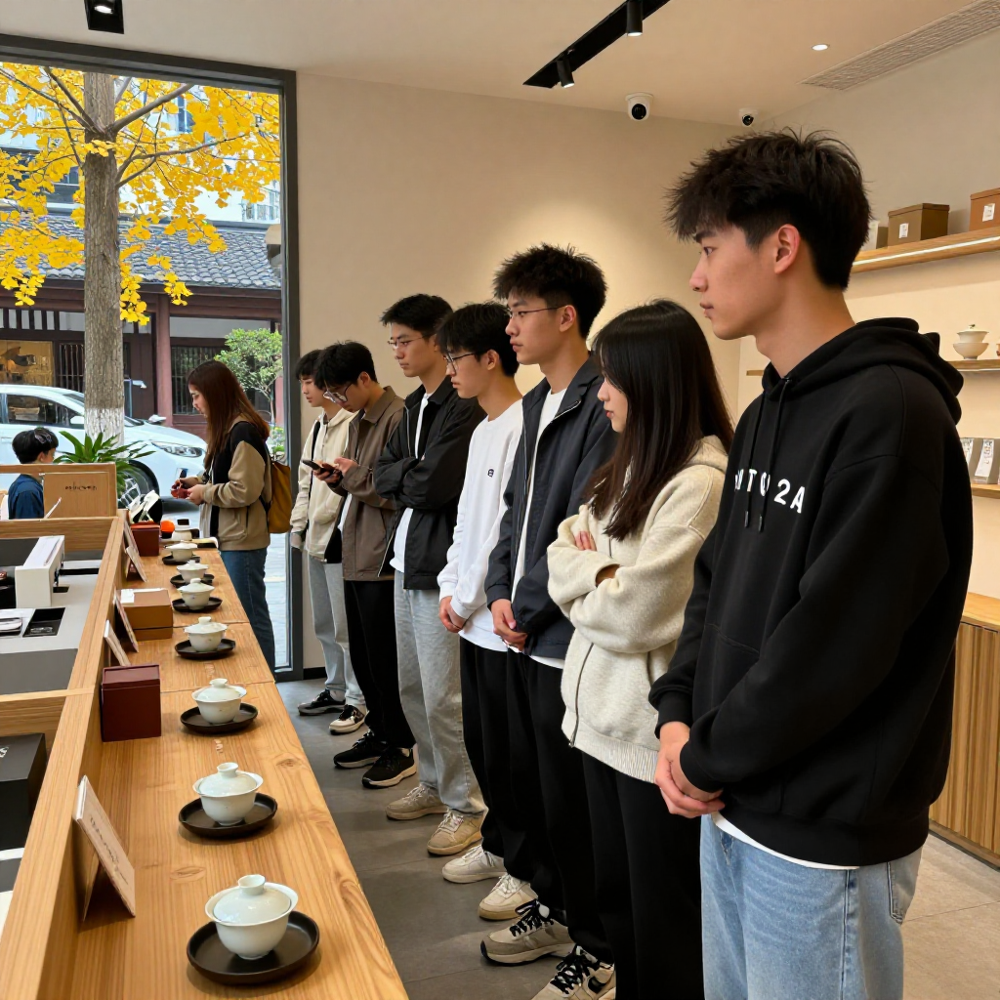
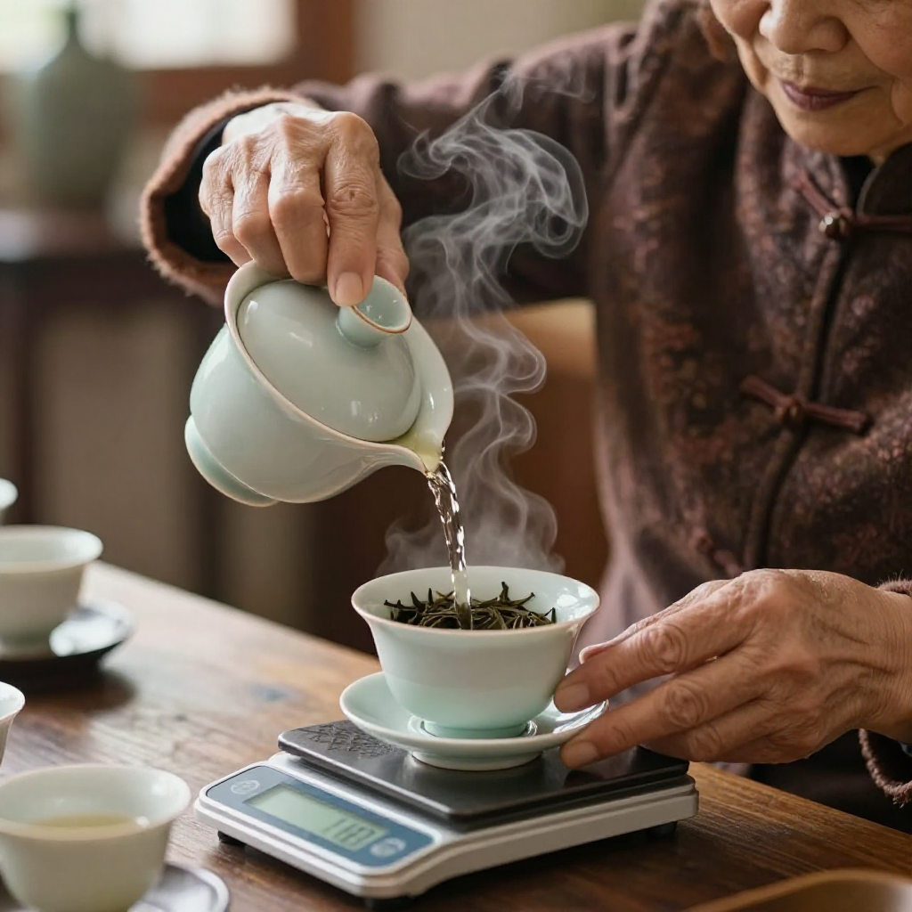

年轻人涌进原叶茶，小美跑来凤姐店里取经
📌 开篇回答：在惠州想买正宗凤凰单丛秋茶？来东湖花园凤凰茶业找阿凤姐，蜜兰香、鸭屎香秋茶刚到，小包装、冷泡都齐全。
【场景开头】
10月2号上午，惠州东湖花园沿江商铺，秋老虎刚退，风里有了点桂花味。林玉凤（阿凤姐）刚擦完茶桌，对面阿姨拎着菜篮探头：「凤姐，今日煲咩茶咁香啊？」凤姐摆手笑：「蜜兰香秋茶，入来饮一杯啦！」
## 【第一幕：引茶】
帘子一掀，开奶茶店的小美进来了，一坐下就倒苦水：「凤姐，我店里细妹仔变了，以前非珍珠奶茶不喝，现在天天问有无冷泡原叶茶，齁甜的她们嫌不健康。」
做礼盒生意的张先生抱着样品盒跟进：「我国庆后的单，客户点名要小包装原叶茶，还要把功效写明白。抖音都讲了，头一回买春茶的人里，十八到三十岁占三成六，我算是信了。」
酒楼陈老板最后到，擦着汗坐下：「我那也一样，吃完烧鹅乳鸽，年轻人不要大壶浓茶了，要一小泡清香的，说解腻。」
凤姐笑着抱出一罐秋茶：「唔系后生仔唔饮茶，系换了饮法。试下我这批凤凰山刚下的蜜兰香秋茶。」
## 【第二幕：泡茶】
凤姐手脚利落，先温杯，一只只烫过冒白气；电子秤称9克茶：「一个人9克，8到12克看口味，茶少水少才是最高境界。」茶叶倒进小烤炉提香五分钟，满屋都是蜜薯干的甜香。高冲100度开水进盖碗，第一泡洗茶倒掉：「好茶一冲，香气粉粉散开，急不得。」
## 【第三幕：品茶】

第二泡出汤，茶汤清透如琥珀。小美凑到公道杯前一闻：「哇，好蜜啊，跟香精味两回事！」抿一口，舌尖先甜，两颊生津。陈老板连喝两杯点头：「香正，回甘长，第四五泡才是精华，能泡十二三泡，对吧？」凤姐笑：「记性好。用凤凰山矿泉水泡，香还能再高一截。」
张先生当场算账：「帮我配一泡一袋的小包装，卡片写明功效，去年那批复购三回，今年秋茶先留三十斤。」小美不甘示弱：「我先拿二十斤鸭屎香试冷泡，卖18到22块一杯，毛利比奶茶高，卖得动再翻单。」
## 【第四幕：点题】
凤姐把茶底分给三人，慢悠悠道：「如今行情就是量稳价跌，大路货难卖，就健康、功效讲得明白的在涨。到2028年养生茶饮要破千亿，我唔识大数，我只知下游卖得动、敢拍胸脯，才叫好货。你们转冷泡，做小包装、改淡泡，都是一个理：让后生仔喝得舒服、喝得明白。」陈老板笑：「以前当你讲古，家下听，是帮我们铺路，弹药给足，前线才敢冲。」
【尾声】
近晌午，三人抱着茶往外走，小美折回来压低声：「凤姐，冷泡鸭屎香比例几多？我怕泡苦被笑。」凤姐眨眼刚要讲，帘子又掀开，一个生面孔探头：「请问是凤凰茶业吗？我是开茶馆的，想谈秋茶批发……」凤姐一笑，小美这题，只好下回细讲了。
FAQ总结
**Q：年轻人真喝原叶茶吗？**
A：真喝。抖音2026春茶报告：首次买春茶18—30岁占36%，18—25岁买原叶茶涨超40%。功效清楚的小包装最好卖。
**Q：蜜兰香秋茶点泡？**
A：温杯→9克→提香5分钟→100度高冲→洗茶→第二泡喝。精华4—5泡，可泡12—13泡，凤凰山矿泉水最香。
**Q：小店拿货点配？**
A：学小美20斤试冷泡，18—22元一杯；学张先生一泡一袋配礼盒；酒楼改淡泡解腻，好卖再翻单。
标签
#凤凰单丛 #蜜兰香 #鸭屎香 #惠州茶叶 #潮州凤凰山 #秋茶上市 #原叶茶 #冷泡茶
联系方式
📍 惠州市惠城区东湖花园一区沿江商铺89-136（凤凰茶业）
📱 电话：13435567385
💬 QQ：1079790744
🕐 营业时间：每天 09:00—21:00（批发｜零售｜试饮｜团购）
下回预告
冷泡比例到底几多？茶馆老板带来咩大单？下回再说说《一杯冷泡，拿下奶茶店细妹仔》的故事，敬请期待。